- Нгуен Дык Ань
- Студенческий билет: 1032215251
- Группа: НКНбд-01-21
- Российский университет дружбы народов
- https://github.com/NguyenDucAnh0512
Дискреционное разграничение прав в Linux. Исследование влияния дополнительных атрибутов
05 октября 2024
Исследовать механизм изменения идентификаторов с помощью битов SetUID и Sticky. Получить практические навыки работы в консолях с дополнительными свойствами. Рассмотрить механизм изменения идентификатора процесса пользователя, а также влияние бита Sticky на запись и удаление файлов
Установить gcc командой “yum install gcc”.
Отключить систему запретов до очередной перезагрузки системы командой “setenforce 0”
Создать программу simpleid.c от имени пользователя guest, которая будет печатать на экране значения UID и GID после запуска
Сравнить значения UID и GID
Создать программу simpleid2.c, которая будет печатать на экране значения действительных идентификаторов
От имени суперпользователя выполнить команды:
“chown root:guest /home/guest/lab/simpleid2”
“chmod u+s /home/guest/lab/simpleid2”
Запустить simpleid2 и id, сравнить результат вывода
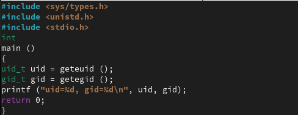

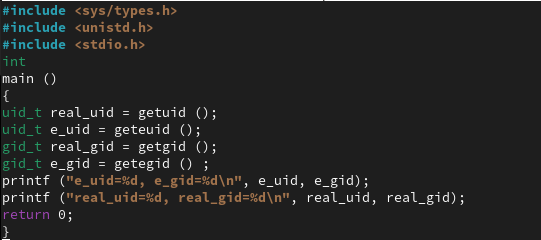
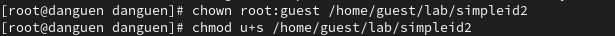

Установить SetGID Бит для файла
Проверять правильность установки новых атрибутов и смены владельца файла simpleid2
Запустить simpleid2 и id, сравнить результат вывода

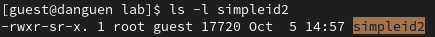

Создать и откомпилировать программу readfile.c, которая читать файл
Сменить владельца у файла readfile.c, чтобы только суперпользователь мог прочитать его, a guest не мог
Сменить у программы readfile владельца и установить SetUID-бит и проверять

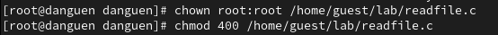


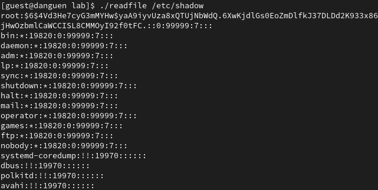
Проверять установлен ли атрибут Sticky на директории /tmp командой “ls -l / | grep tmp”
От имени пользователя guest создать файл file01.txt в директории /tmp со словом test
Разрешить file01.txt прав чтения и записи для категории пользователей «все остальные»
От пользователя guest2 (не является владельцем) попробовать прочитать файл /tmp/file01.txt


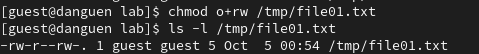

От пользователя guest2 попробовать дозаписать в файл /tmp/file01.txt слово test2
От пользователя guest2 попробовать удалить файл /tmp/file01.txt
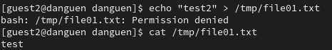

Снимать атрибут t (Sticky-бит) с директории /tmp от имени суперпользователя
Снова от пользователя guest2 попробовать дозаписать в файл /tmp/file01.txt слово test2
Снова от пользователя guest2 попробовать удалить файл /tmp/file01.txt
Вернуть атрибут t на директорию /tmp от имени суперпользователя
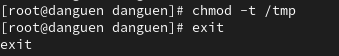
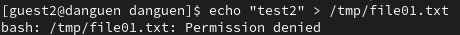
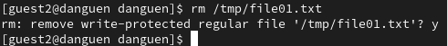

После лабораторной работы я получил практические навыки работы в консолях с дополнительными свойствами